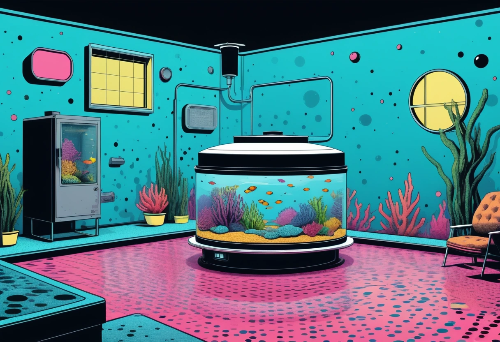

Aquarium Medikamente und Quarantäne – So schützt du deine Fische
Krankheiten im Aquarium sind der Albtraum jedes Aquarianers. Ob weiße Pünktchen auf den Flossen, schimmernde Beläge auf der Haut oder apathisches Verhalten – wenn Fische krank werden, ist schnelles und gezieltes Handeln gefragt. Doch die beste Behandlung ist die Vorbeugung, und die wichtigste vorbeugende Maßnahme ist die Quarantäne. Ein separates Quarantänebecken ist der Schlüssel zur Gesundheit deines gesamten Aquarienbestands. In diesem Guide erfährst du, wie du ein Quarantänebecken einrichtest, welche Medikamente für welche Krankheiten geeignet sind und wie du einen Behandlungsplan erstellst, ohne dein Hauptbecken zu gefährden.
Viele Aquarianer unterschätzen das Risiko, das von neuen Fischen ausgeht. Selbst Fische aus seriösen Zuchtbetrieben können Krankheitserreger in sich tragen, ohne selbst krank zu wirken. Stress beim Transport und die Umstellung auf neue Wasserwerte schwächen das Immunsystem, sodass Keime ausbrechen können. Ohne Quarantäne gelangen diese Erreger direkt in dein Hauptbecken – und innerhalb weniger Tage können alle Fische infiziert sein. Ein Quarantänebecken ist daher keine Option, sondern eine Notwendigkeit für verantwortungsvolle Aquaristik.
Das Quarantänebecken – einfach und effektiv
Ein Quarantänebecken muss nicht groß oder aufwendig sein. Ein 20- bis 40-Liter-Becken reicht völlig aus, um einzelne Fische oder kleine Gruppen für zwei bis vier Wochen zu beobachten. Die Einrichtung ist minimalistisch: Ein einfacher Schwammfilter (am besten ein alter Filter aus dem Hauptbecken, der bereits Bakterien enthält), eine Heizung mit Thermostat, eine einfache Beleuchtung und ein paar Versteckmöglichkeiten (z. B. Tonröhren oder Kunststoffpflanzen). Auf Bodengrund wird verzichtet – er erschwert die Reinigung und kann Medikamente binden. Der Beckenboden bleibt blank oder wird mit einer dünnen Schicht Sand bedeckt.
Wichtig ist, dass das Quarantänebecken vollständig vom Hauptbecken getrennt ist. Verwende kein gemeinsames Equipment (Kescher, Schlauch, Eimer) zwischen den Becken, ohne es vorher zu desinfizieren. Idealerweise steht das Quarantänebecken in einem anderen Raum, um eine Übertragung durch Spritzwasser zu vermeiden. Nach jeder Quarantäne wird das Becken komplett gereinigt und desinfiziert. Eine einfache Methode: Das leere Becken mit einer 10-prozentigen Haushaltsbleichlauge auswischen, gründlich spülen und trocknen lassen. Anschließend einige Stunden mit klarem Wasser und einem Entchlorer durchspülen.
Quarantäne-Ablauf – Schritt für Schritt
- Vorbereitung: Das Quarantänebecken wird mit Wasser aus dem Hauptbecken befüllt oder mit frischem, aufbereitetem Wasser. Der Filter läuft mindestens eine Woche, bevor die ersten Fische einziehen.
- Eingewöhnung: Neue Fische werden wie gewohnt eingewöhnt (Temperaturangleichung, Tröpfchenmethode) und dann ins Quarantänebecken gesetzt.
- Beobachtung: Mindestens zwei Wochen, besser drei bis vier Wochen, werden die Fische täglich beobachtet. Achte auf Verhaltensauffälligkeiten (Schwimmen an der Oberfläche, Flossenklemmen, Scheuern an Gegenständen) und sichtbare Symptome (Pünktchen, Verpilzungen, aufgeblähter Bauch).
- Vorsorgliche Behandlung: Viele erfahrene Aquarianer führen bei Neuzugängen eine vorsorgliche Behandlung gegen die häufigsten Parasiten (Ichthyophthirius/Pünktchenkrankheit, Hautwürmer) durch. Sprich mit deinem Tierarzt oder einem erfahrenen Aquarianer über geeignete Medikamente.
- Umsetzen: Sind die Fische nach der Quarantänezeit gesund, können sie ins Hauptbecken umgesetzt werden. Das Quarantänebecken wird gereinigt und für den nächsten Einsatz vorbereitet.
Die häufigsten Aquarienkrankheiten und ihre Behandlung
Ichthyophthirius (Pünktchenkrankheit / Weißpünktchen)
Die Pünktchenkrankheit ist die häufigste Erkrankung bei Aquarienfischen. Sie wird durch den einzelligen Parasiten Ichthyophthirius multifiliis verursacht, der sich unter der Haut des Fisches einnistet und weiße, stecknadelkopfgroße Pünktchen bildet. Die Fische scheuern sich an Gegenständen, klemmen die Flossen an und werden apathisch. Unbehandelt führt die Krankheit meist zum Tod. Die Behandlung erfolgt mit speziellen Ichthyophthirius-Medikamenten auf Basis von Malachitgrün oder Formalin. Wichtig: Erhöhe die Temperatur während der Behandlung auf 28 bis 30 °C, um den Lebenszyklus des Parasiten zu beschleunigen. Die Behandlung muss über mehrere Tage erfolgen, da das Medikament nur die freischwimmenden Stadien abtötet. Nach etwa einer Woche ist die Krankheit meist überstanden.
Flossenfäule
Flossenfäule ist eine bakterielle Infektion, die meist durch schlechte Wasserqualität oder Verletzungen ausgelöst wird. Die Flossen wirken ausgefranst, weißlich verfärbt oder lösen sich buchstäblich auf. In fortgeschrittenen Stadien greift die Infektion auf den Flossenansatz über. Die Behandlung erfolgt mit Breitband-Antibiotika aus dem Aquaristikfachhandel. Parallel dazu sind tägliche Wasserwechsel von 30 bis 50 Prozent notwendig, um die Wasserqualität zu verbessern. Die Heilung dauert meist ein bis zwei Wochen, die nachwachsenden Flossen können zunächst eine helle, durchsichtige Farbe haben – das ist normal und kein Grund zur Sorge.
Samenflecken / Samtkrankheit
Die Samtkrankheit (Oodinium) wird ebenfalls durch Einzeller verursacht und zeigt sich als feiner, goldbrauner bis rötlicher Belag auf der Haut der Fische, der an Puderzucker oder Samt erinnert. Die Fische scheuern sich, atmen schnell und klemmen die Flossen an. Die Samtkrankheit ist hochansteckend und verläuft oft tödlich, wenn sie nicht frühzeitig erkannt wird. Die Behandlung erfolgt mit kupferhaltigen Medikamenten oder speziellen Oodinium-Mitteln. Auch hier hilft eine Temperaturerhöhung. Die Behandlung dauert meist sieben bis zehn Tage. Wichtig: Kupfer ist giftig für Wirbellose – behandle daher auf jeden Fall im separaten Quarantänebecken.
Medikamente richtig dosieren und anwenden
Die korrekte Dosierung von Medikamenten ist entscheidend für den Behandlungserfolg. Zu wenig Medikament macht die Erreger resistent, zu viel schädigt die Fische oder tötet die nützliche Filterbakterien. Halte dich exakt an die Herstellerangaben. Einige Medikamente müssen nach einigen Tagen erneut dosiert werden, um die nächste Generation der Parasiten zu erreichen. Dokumentiere jede Behandlung mit Datum, Medikament, Dosierung und beobachteten Symptomen.
Achtung: Viele Medikamente schädigen die biologische Filterung. Während der Behandlung können Ammoniak- und Nitritspiegel ansteigen. Teste täglich die Wasserwerte und mache bei Bedarf zusätzliche Wasserwechsel. Verwende während der Behandlung keinen Aktivkohlefilter – Aktivkohle bindet die Medikamente und macht sie unwirksam. Entferne die Kohle vor der Behandlung und setze sie frühestens eine Woche nach der letzten Medikamentengabe wieder ein.
Vorbeugung ist der beste Schutz
Die wirksamste Strategie gegen Aquarienkrankheiten ist die Vorbeugung. Drei Maßnahmen sind besonders wichtig:
- Stabile Wasserwerte: Die meisten Krankheiten brechen aus, wenn das Immunsystem der Fische durch schlechte Wasserqualität geschwächt ist. Regelmäßige Wasserwechsel, eine gute Filterung und die Kontrolle von Ammoniak, Nitrit und Nitrat sind die beste Medizin.
- Stress vermeiden: Hektische Wasserwechsel, zu starke Strömung, falsche Vergesellschaftung oder ständige Störungen stressen Fische. Stress senkt die Immunabwehr und macht anfällig für Krankheiten.
- Quarantäne: Kein neuer Fisch, keine neue Pflanze, kein neues Dekorationsteil kommt ohne Quarantäne ins Hauptbecken. Pflanzen können übrigens auch Krankheitserreger übertragen – eine zweiwöchige Quarantäne in einem separaten Gefäß ist auch hier empfehlenswert.
Pflanzenquarantäne – oft unterschätzt
Nicht nur Fische, auch Pflanzen können Krankheiten und Schädlinge ins Aquarium einschleppen. Schneckeneier, Planarien, Hydra und sogar Fischkrankheitserreger haften an Blättern und Stängeln. Eine Pflanzenquarantäne ist daher genauso wichtig wie die Fischquarantäne. Lege neue Pflanzen für zwei bis drei Tage in ein separates Gefäß mit Wasser aus deinem Aquarium. Spüle sie vor dem Einsetzen gründlich unter fließendem Wasser ab und entferne alle erkennbaren Schnecken oder Eigelege.
Besonders gefürchtet ist die Einschleppung von Algen über neue Pflanzen. Selbst unsichtbare Algensporen können im Wasser oder an den Blättern haften. Eine Pflanzenquarantäne mit reduzierter Beleuchtung und regelmäßigen Wasserwechseln verhindert, dass sich Algen im Hauptbecken ausbreiten. Viele Aquarianer tauchen neue Pflanzen zusätzlich für 30 bis 60 Sekunden in eine schwache Kaliumpermanganatlösung (5 mg/l), um anhaftende Keime abzutöten. Danach gründlich abspülen und ins Quarantänebecken setzen.
Wann zum Tierarzt?
Nicht jede Krankheit lässt sich mit handelsüblichen Medikamenten behandeln. Bei bakteriellen Infektionen, die nicht auf Breitbandantibiotika ansprechen, bei inneren Parasiten oder bei unklaren Symptomen ist der Gang zum Tierarzt unumgänglich. Ein auf Fische spezialisierter Tierarzt kann einen Abstrich nehmen, den Erreger mikroskopisch bestimmen und ein gezieltes Medikament verschreiben. In Deutschland gibt es ein wachsendes Netzwerk an Fischtierärzten – frage in deiner Tierarztpraxis nach einer Überweisung. Eine genaue Diagnose ist nicht nur für die Heilung wichtig, sondern auch, um Resistenzen zu vermeiden, die durch falsche Medikamentenwahl entstehen können.
🛒 Medikamente und Quarantäne-Zubehör
Diese Produkte haben sich in der Praxis bewährt und sollten in keinem Aquarianer-Haushalt fehlen:
Fazit – Quarantäne rettet Leben
Ein Quarantänebecken ist die günstigste Versicherung für deinen Fischbestand. Die Anschaffung kostet wenig, die Einrichtung ist einfach, und der Nutzen ist unbezahlbar. Wer konsequent quarantäniert und die Wasserqualität im Hauptbecken stabil hält, wird Krankheiten nur selten erleben. Und falls doch eine Krankheit ausbricht: Mit einem gut ausgestatteten Medikamentenvorrat, sauberer Dokumentation und einem durchdachten Behandlungsplan hast du alle Werkzeuge in der Hand, um deine Fische schnell und sicher zu heilen.
Mehr zur Erkennung von Fischkrankheiten und ihren Symptomen findest du in unserem ausführlichen Fischkrankheiten-Guide. Und wenn du wissen möchtest, wie du Krankheiten durch gute Wasserwerte vorbeugst, lies unseren Wasserwerte-Ratgeber.